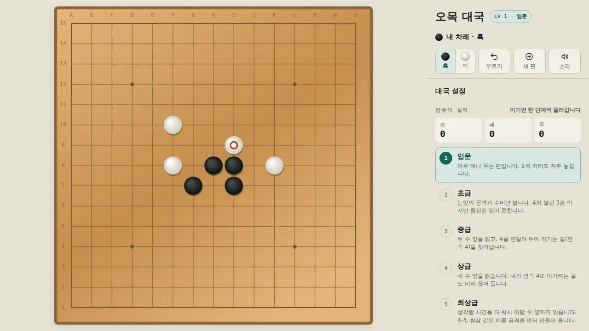
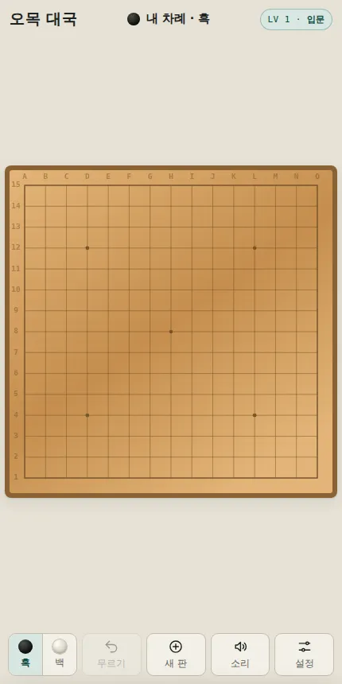

🧩 퍼즐 게임 · 무료 · 설치 없음
오목 대국
“나무 바둑판 위에서 컴퓨터와 한 판”
- 한 판 5~15분
- 컴퓨터 실력 5단계
- 15줄·19줄 판
- 설정·전적 자동 저장
회원가입 없이 누르면 바로 시작돼요
어떤 게임인가요?
따뜻한 나무 바둑판 위에 흑돌과 백돌을 번갈아 놓아, 가로·세로·대각선으로 다섯 개를 먼저 잇는 사람이 이겨요. 규칙은 단순하지만 한 수 한 수 수읽기가 깊어요.
상대는 컴퓨터예요. 아무 데나 두는 「입문」부터 여덟 수 앞까지 읽는 「최상급」까지 다섯 단계가 있고, 이기면 다음 판부터 한 단계씩 올라가요.
자유룰, 표준룰, 그리고 흑에게만 쌍삼·사사·장목을 막는 렌주룰까지 고를 수 있어요. 규칙마다 설명이 붙어 있어서 처음 듣는 규칙도 바로 이해할 수 있어요.
이렇게 해요
- STEP 1
돌 색을 골라요
흑으로 먼저 둘지, 백으로 컴퓨터의 첫 수를 받을지 골라요.
- STEP 2
칸을 눌러 바로 놓아요
누르는 순간 돌이 놓이고 「딱」 하는 바둑돌 소리가 나요. 실수했다면 「무르기」로 한 수 물릴 수 있어요.
- STEP 3
다섯 개를 먼저 이어요
가로·세로·대각선 다섯 줄을 먼저 만들면 승리! 이기면 컴퓨터 실력이 한 단계 올라가요.

⚙️ 고를 수 있는 것
- 컴퓨터 실력: 입문 · 초급 · 중급 · 상급 · 최상급 (「도전 모드」를 켜 두면 이길 때마다 자동으로 올라가요)
- 규칙: 자유룰 · 표준룰(정확히 다섯만 승리) · 렌주룰(흑의 쌍삼·사사·장목 금지), 규칙을 하나씩 켜고 끌 수도 있어요
- 바둑판 크기: 15줄 또는 19줄
- 승·패·무 전적과 설정은 그 기기에 저장돼요
이런 분께 추천해요
- 잠깐 머리를 식히며 한 판 두고 싶은 분
- 렌주룰로 제대로 된 오목을 연습하고 싶은 분
- 가족과 번갈아 컴퓨터에 도전해 보고 싶은 분
처음이라면 「입문」 표준룰로 시작해 보세요. 렌주룰에서 흑으로 두면 금수 자리에는 놓을 수 없다고 알려 줘요.
📱 어떤 기기에서 하면 좋을까요?
- 가장 좋아요컴퓨터·노트북 크롬·엣지·웨일
바둑판 옆에 설정과 실력 단계가 함께 보여서 가장 편해요.
- 좋아요태블릿 아이패드·갤럭시탭
가로든 세로든 바둑판이 화면에 맞게 커져요.
- 좋아요휴대폰 세로 화면
바둑판이 화면 가득 차고, 아래 버튼으로 무르기·새 판·설정을 할 수 있어요. 19줄 판은 칸이 작으니 15줄을 추천해요.
오른쪽 위 메뉴(⋮ 또는 ···)에서 「다른 브라우저로 열기」를 눌러 크롬이나 사파리로 열어 주세요. 앱 안에서는 전체 화면이 안 되고 저장이 풀릴 수 있어요.
🍎 아이폰·아이패드에서는
- ① 사파리로 열기
주소를 사파리에서 열면 돼요. 가로·세로 어느 쪽이든 괜찮아요.
- ② 화면을 넓게 쓰기
아이폰은 전체 화면 버튼이 없어요. 주소창 왼쪽의 가가(aA) 버튼 → 「도구 막대 가리기」를 누르면 바둑판을 더 크게 볼 수 있어요.
- ③ 소리
무음 스위치가 켜져 있으면 바둑돌 소리가 나지 않아요. 소리 없이도 둘 수 있고, 화면의 「소리」 버튼으로 켜고 끌 수 있어요.
🤖 갤럭시 등 안드로이드에서는
크롬이나 삼성 인터넷으로 열면 바로 둘 수 있어요. 메뉴(⋮)에서 「홈 화면에 추가」를 해 두면 다음부터 아이콘 하나로 열려요.
▶ 바로 해 보기
설치도, 회원가입도 필요 없어요.
오목 시작하기game.edoori.co.kr/omok/